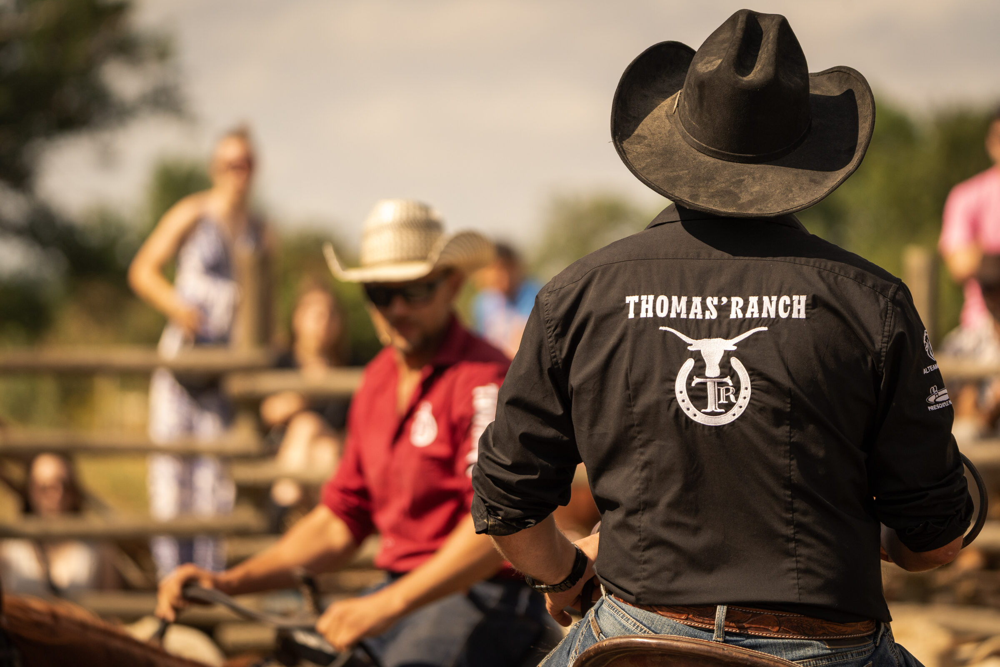
RANCHS · RODÉO · VIE RÉELLE
L'OUEST
EN FILM.
La vie des ranchs, loin des clichés : les matins, les chevaux, les gens. Je la raconte avec des images cinématographiques, tournées avec des optiques anamorphiques.
UN MONDE
QUE J'AIME
RACONTER.
J'ai une vraie passion pour l'univers western. Mon objectif est de mettre en avant les ranchs et les centres équestres à travers des images cinématographiques : leur quotidien, leurs infrastructures, leurs cours, leurs stages, leurs concours et leurs événements. Je peux rester plusieurs jours sur place pour raconter l'histoire complète d'un lieu, pas seulement un moment.
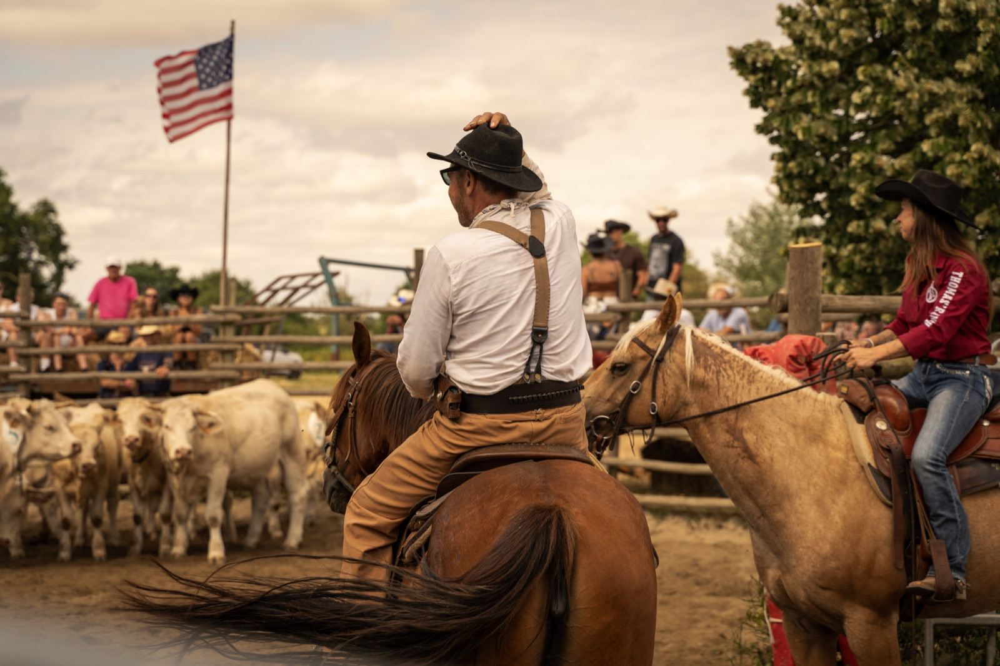
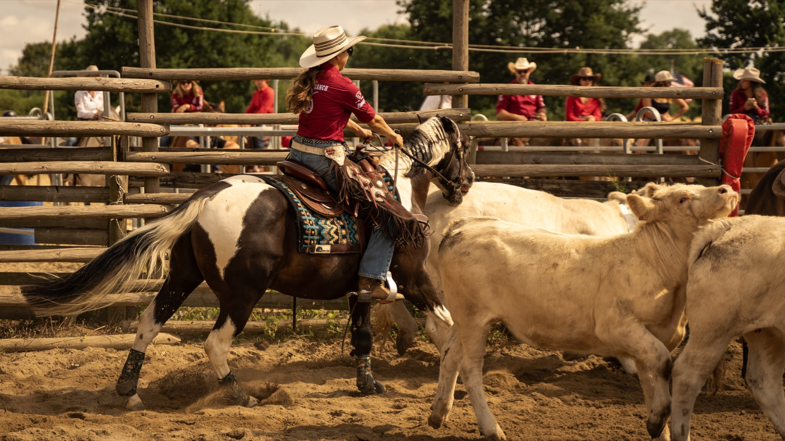
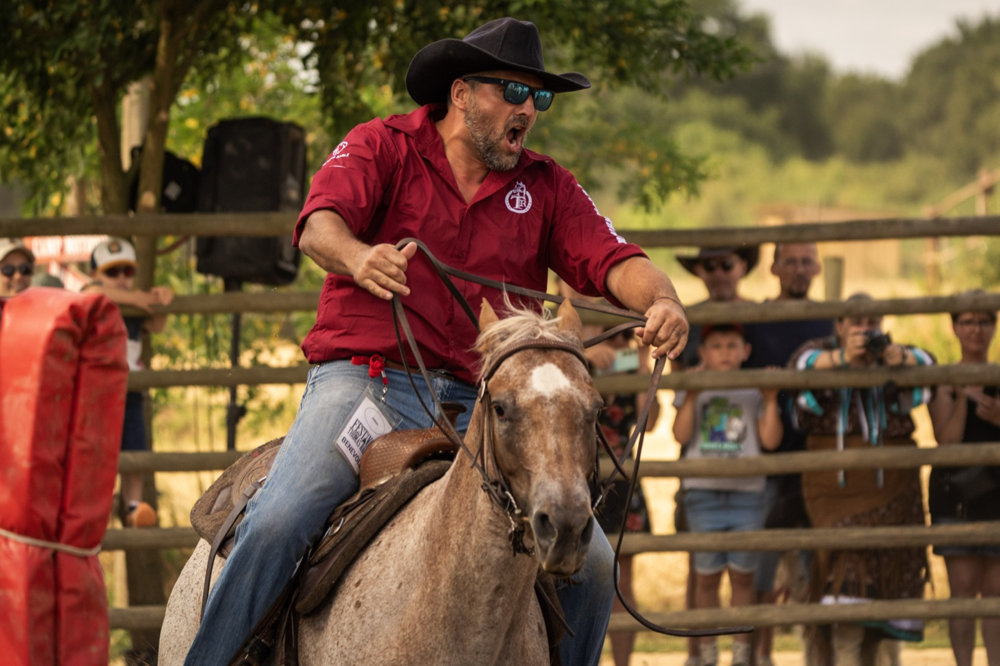
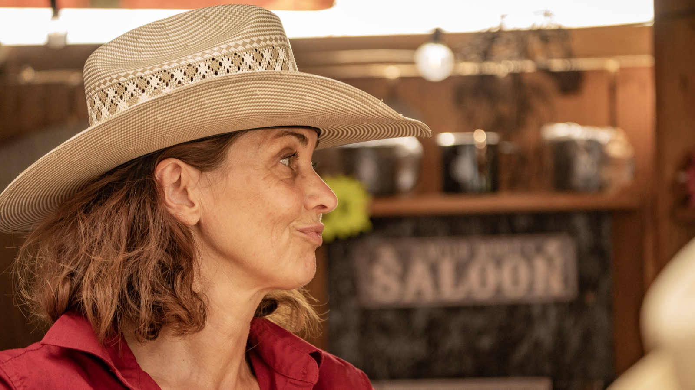
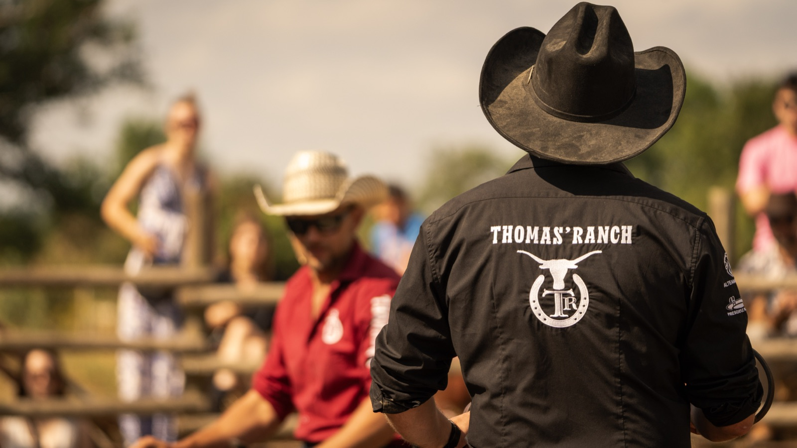
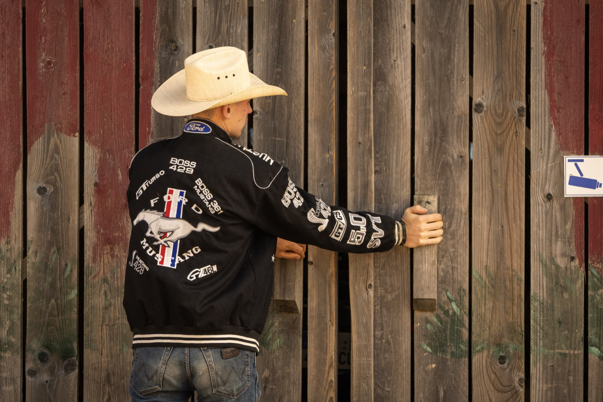
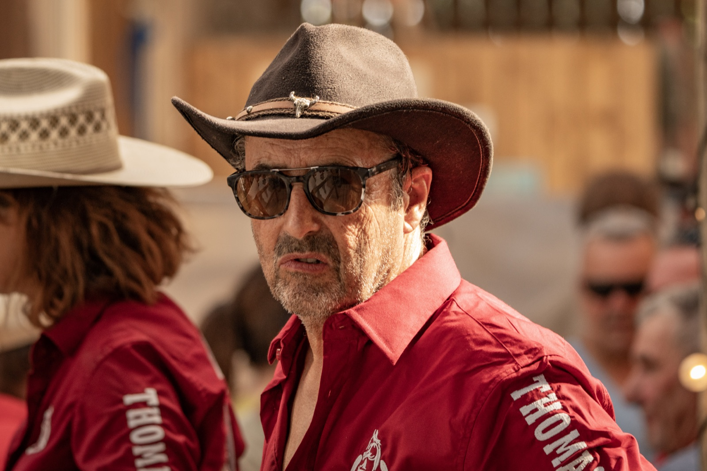
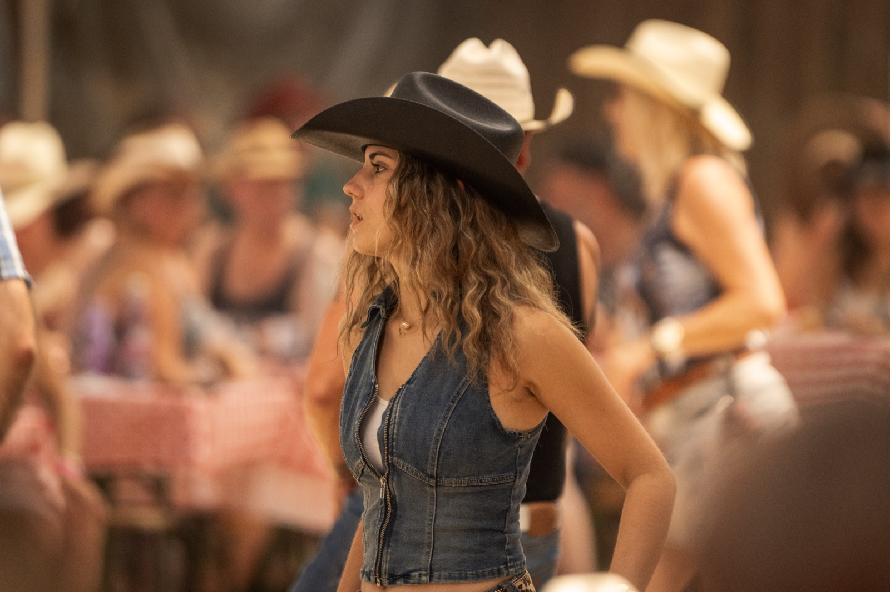
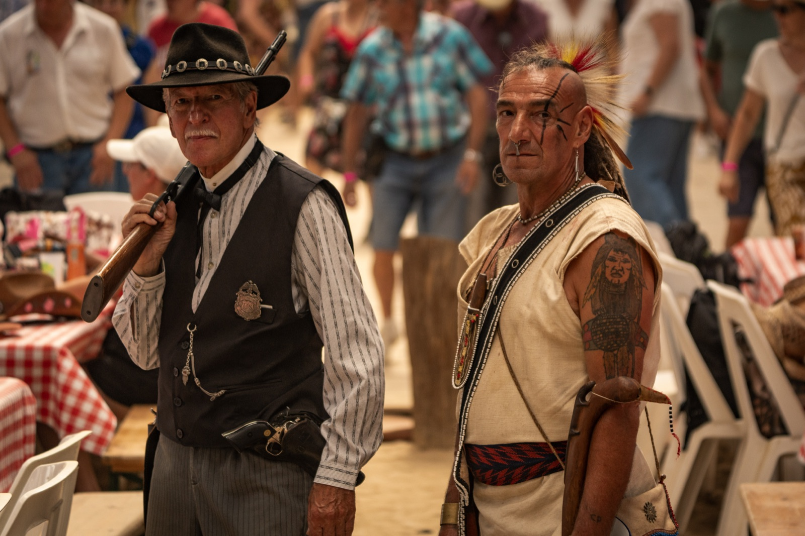
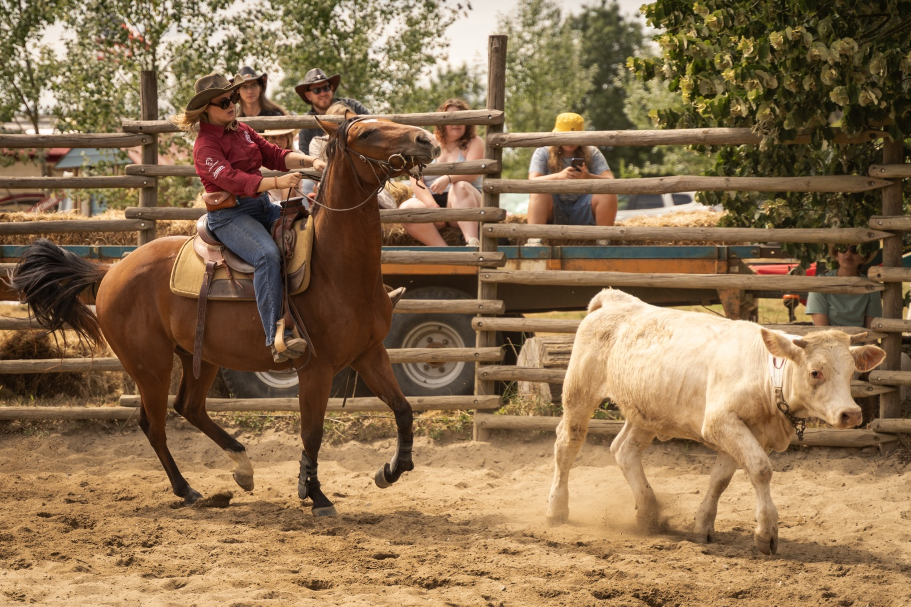
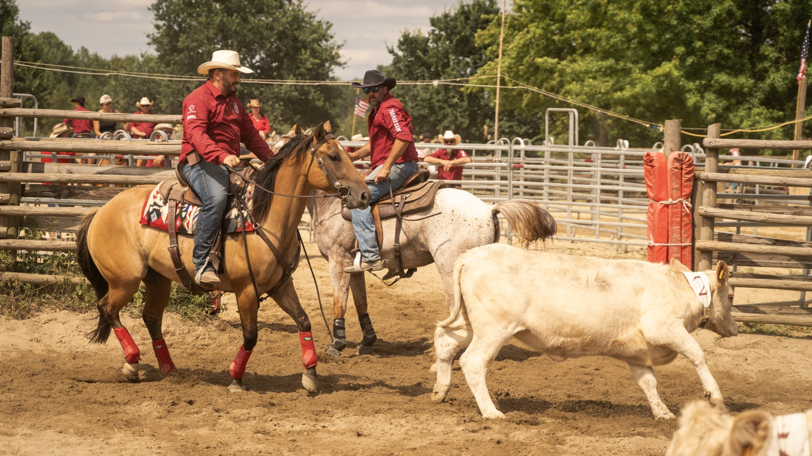
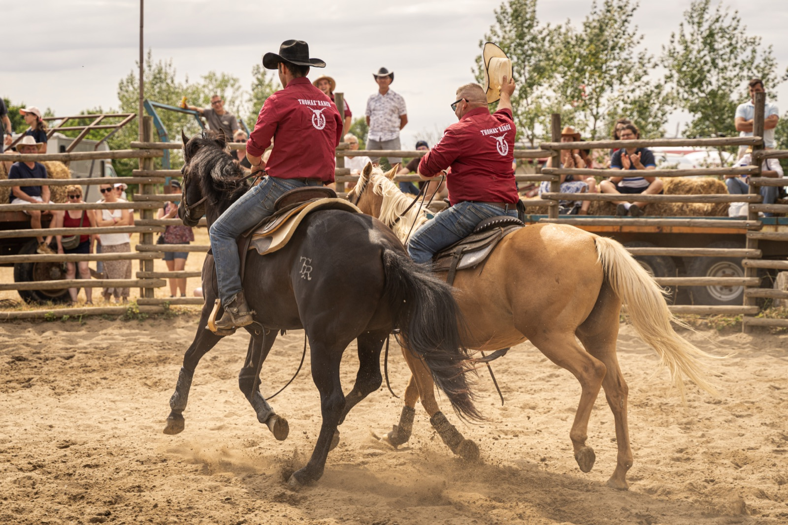
FILMS WESTERN
LE WESTERN
EN MOUVEMENT
VOTRE RANCH, VOTRE CENTRE
ON EN
PARLE ?
Un ranch, un centre équestre, un événement : parlons de l'histoire que vous voulez raconter.
Demander un échange →